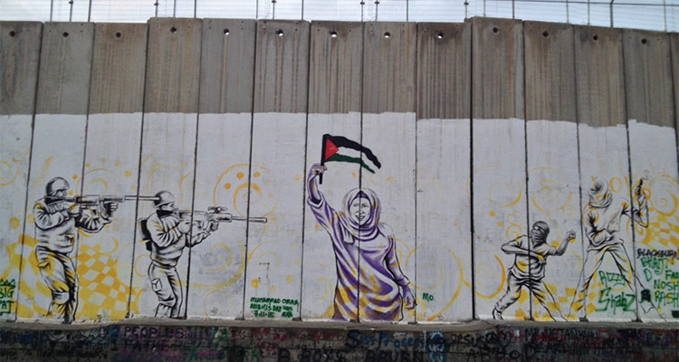

巴勒斯坦，这个一直都处于国际新闻漩涡中心的国家。而说起巴勒斯坦就不得不提到与其持续发生冲突的以色列。巴以（巴勒斯坦和以色列）冲突是中东地区冲突的热点之一，冲突的背后隐藏着深刻的历史根源，既有宗教的、文化的、民族的因素，更重要的是大国干预等外部因素，各种因素互相影响、激化，使得巴以冲突的复杂性非同一般。其中，两个民族对同一块土地提出了排他性的主权要求是根本原因。犹太移民定居点问题和耶路撒冷地位问题则是巴以和平之路上的严重障碍。
从历史上看，巴以冲突是信仰基督教的欧洲人把信仰犹太教的犹太人赶出欧洲的产物。欧洲人“鼓励”犹太人回到他们的“故乡”以色列，信仰伊斯兰教的阿拉伯人则极端反对，最终引起了巴以冲突。19世纪末·犹太复国主义运动在世界各地兴起，各地的犹太人大批移入巴勒斯坦。在此过程中，犹太人与当地的巴勒斯坦阿拉伯人多次发生流血冲突。到了一战期间，巴勒斯坦沦为英国的“委任统治地”。自此，阿拉伯人成为该地区的主要居民。英国占领巴勒斯坦后将其分为两部分：即以约旦河为界把巴勒斯坦分为东西两部分，东部称外约旦(即今约旦哈希姆王国)，西部仍称巴勒斯坦(即今以色列、约旦河西岸和加沙地带)。
1947年·联合国在年通过了第181号决议决定，在2.7万平方公里的巴勒斯坦领土上建立犹太国和阿拉伯国，耶路撒冷国际化。1948年·以色列宣告独立。由于这项决议遭到巴勒斯坦人以及阿拉伯世界的强烈反对，巴勒斯坦国却未能诞生。以宣布建国后，阿拉伯国家和以色列之间爆发了5次大规模战争。数百万巴勒斯坦阿拉伯人被逐出家园，沦为难民。
1964年·为恢复民族权利，重返家园，巴勒斯坦人开始了武装斗争。5月，巴勒斯坦解放组织成立，此外，还存在着包括哈马斯、伊斯兰圣战组织等其他巴政治派别。它们的下属军事派别曾制造了一系列针对以色列目标的爆炸和袭击事件，从而导致以色列严厉的打击报复。巴以双方就这样陷入报复与反报复的恶性循环中。
1976年3月30日，在约旦河西岸巴自治城市纳布卢斯，1万多名巴勒斯坦人走向街头，抗议以色列对巴领土的占领和封锁。示威群众向驻守在以军检查站的士兵投掷石块，以军则向人群发射了催泪瓦斯、带橡皮头的金属子弹以及实弹，5名巴勒斯坦人被打死。在西岸另一座巴自治城市拉马拉，1000多名巴示威群众与以色列士兵发生冲突，1名巴勒斯坦人被打死。巴勒斯坦于31日为死难者举行葬礼。
1、和平是世界人民的心声，和平是安居乐业的保证，和平是幸福生活的根本，愿世界和平；
2、每一个民族都有支持自己信仰与政治的自由，但是希望不要以武力来解决彼此的冲突。